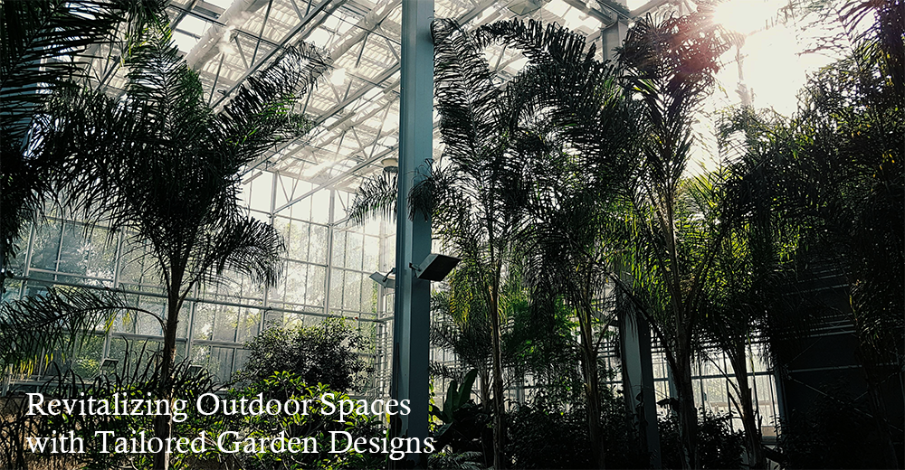
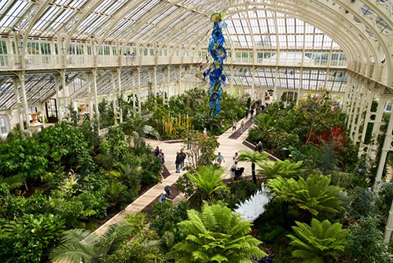
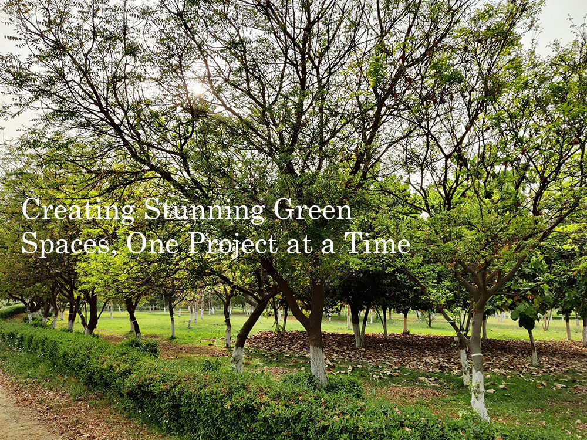
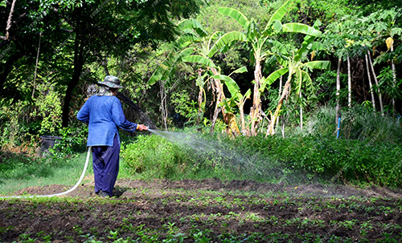
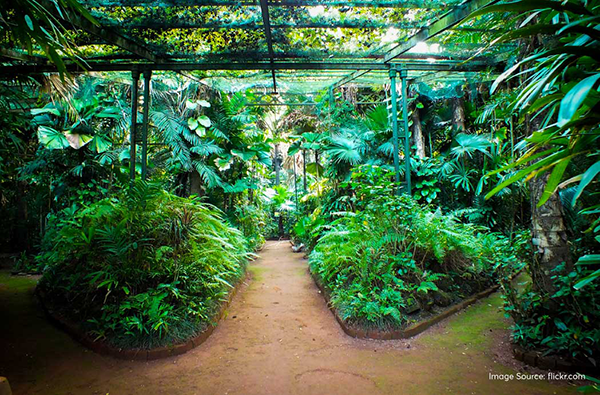
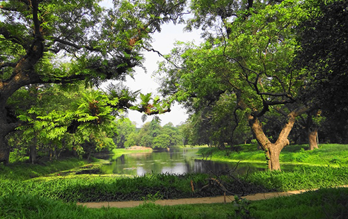

Preserving the Planet Through Passionate Work
Our staff members play a key role in hands-on plant care, habitat restoration, and educational outreach, directly impacting conservation efforts.
Our vision is Fostering a Deeper Connection with Nature for a Sustainable Tomorrow
Join UsExperience the magic of the botanical garden, now just a click away.
Your virtual journey starts here.

We take pride in the exceptional gardens we've crafted and maintained. Our team has transformed outdoor spaces into lush, vibrant sanctuaries, blending design with sustainability.
From personalized garden layouts to meticulous care, every project we complete reflects our commitment to quality and attention to detail. We've created thriving, beautiful environments that grow with every season, and we’re proud to leave a lasting impact with every garden we touch.
More
The diverse plant collections of botanical gardens are one of the key highlights that make these spaces so valuable and educational. These collections include a wide variety of plant species, each carefully chosen and cultivated for different purposes: scientific research, conservation, public education, and aesthetic enjoyment. Here’s an in-depth look at the types of plant collections you might find in a botanical garden.Some botanical gardens organize plants by their native regions or geographical origins. These collections help visitors explore plant diversity across different parts of the world.
Botanical gardens play a pivotal role in plant conservation, serving as both sanctuaries for endangered species and hubs for research and education. Given the increasing threats to biodiversity from habitat destruction, climate change, and human activity, the role of botanical gardens in plant conservation is more important than ever. Here’s a deeper look into the various conservation efforts that botanical gardens are involved
Botanical gardens often cultivate rare, endangered, or threatened plant species in controlled environments.

Preserving the Planet Through Passionate Work
Our staff members play a key role in hands-on plant care, habitat restoration, and educational outreach, directly impacting conservation efforts.
We believe in professional development, providing our employees with ongoing opportunities for learning, training, and career advancement.
At the botanical garden, we encourage teamwork and creativity, empowering employees to contribute ideas, share expertise, and drive forward our green initiatives.
Whether you're working behind the scenes in horticulture, education, or public relations, every role at the botanical garden helps promote a sustainable future for all.

Join a team of dedicated individuals working together to inspire change, foster environmental education, and ensure the sustainability of our botanical garden.allowing you to shape your career in a way that aligns with your personal goals and professional aspirations. Grow with us and become part of a legacy that makes a lasting impact.

Located in Udhagamandalam near Ooty in Tamil Nadu, the Government Botanical Gardens are one of the best botanical gardens in India. It is spread over an area of 55 hectares. Lying on the lower slope of the Doddabetta peak, this garden has a terraced layout. The garden today has a collection of more than 1000 exotic, as well as indigenous species of plants, shrubs, herbs, ferns, trees and bonsai plants.

Hyderabad botanical garden is the botanical garden located in the Kondapur district, HITEC City of Hyderabad. Situated near the HITEC city this garden is 16km away from the Hyderabad railway station. The aim is to develop and preserve the germ plasm and to educate the people, all the modern facilities have been installed in this garden.

he Cubbon Park or Sri Chamarajendra Park is located in the heart of Bengaluru city. Founded in 1870 with an area of 100 acres, the Park today covers an area of 300 acres. It features a rich heritage of abundant flora and fauna planted in the area. With more than 6000 plants, the botanical park features some exotic and indigenous species of about 68 genera and 96 species.